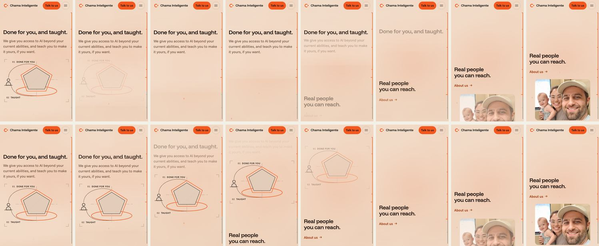
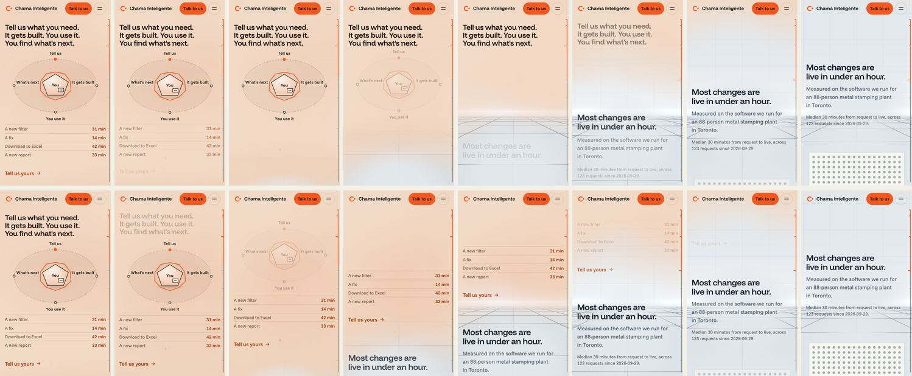

<title>Phone section handoff</title>
<meta name="claude:viewport-fit-sides" content="cover">
<meta name="description" content="chamainteligente.com: on phones a section now leaves as one piece. Live 2026-11-17.">
<style>
/* layout: headline numbers, then before/after frame strips carry the story */
:root { --ground:#f3f0e8; --ground-2:#e9e4d8; --ink:#141412; --ink-dim:#5e5a52; --line:rgba(20,20,18,.14); --ember:#c9461b; --ok:#2f7a4f; --open:#a86a12; --open-soft:rgba(168,106,18,.12); --sans:"Helvetica Neue",Helvetica,Arial,sans-serif; }
@media (prefers-color-scheme: dark) { :root:not([data-theme="light"]) { --ground:#0e0c0a; --ground-2:#171412; --ink:#ece7dc; --ink-dim:#9a938a; --line:rgba(243,240,232,.14); --ember:#f4581f; --ok:#7fcf9a; --open:#e0a54a; --open-soft:rgba(224,165,74,.14); color-scheme:dark; } }
:root[data-theme="dark"] { --ground:#0e0c0a; --ground-2:#171412; --ink:#ece7dc; --ink-dim:#9a938a; --line:rgba(243,240,232,.14); --ember:#f4581f; --ok:#7fcf9a; --open:#e0a54a; --open-soft:rgba(224,165,74,.14); color-scheme:dark; }
* { box-sizing:border-box; }
body { background:var(--ground); color:var(--ink); font-family:var(--sans); font-size:16px; line-height:1.5; -webkit-font-smoothing:antialiased; margin:0; }
a { color:inherit; text-decoration-color:var(--ember); text-underline-offset:.18em; }
code { font-size:.88em; }
.wrap { max-width:62rem; margin:0 auto; padding-block:2.5rem 4rem; padding-left:max(16px,env(safe-area-inset-left,0px)); padding-right:max(16px,env(safe-area-inset-right,0px)); display:grid; gap:2.8rem; }
.wrap > * { min-width:0; }
h1 { margin:0; font-size:clamp(2.1rem,6vw,3.5rem); font-weight:500; letter-spacing:-.04em; line-height:1.02; text-wrap:balance; }
.lede { margin:.9rem 0 0; max-width:62ch; color:var(--ink-dim); font-size:1.1rem; }
h2 { margin:0 0 1rem; font-size:1.35rem; font-weight:600; letter-spacing:-.02em; text-wrap:balance; }
.note { margin:.7rem 0 0; color:var(--ink-dim); font-size:.88rem; max-width:70ch; }
.found { display:grid; grid-template-columns:repeat(4,minmax(0,1fr)); gap:1rem; margin:0; padding:0; list-style:none; }
.found > li { padding-top:.7rem; border-top:2px solid var(--ember); }
.found b { display:block; font-size:2.1rem; font-weight:500; letter-spacing:-.03em; line-height:1.05; font-variant-numeric:tabular-nums; }
.found span { color:var(--ink-dim); font-size:.88rem; }
.frames { border:1px solid var(--line); border-radius:8px; padding:1rem; background:var(--ground-2); display:grid; grid-template-columns:auto minmax(0,1fr); gap:.6rem 1rem; align-items:center; }
.frames .rows { display:grid; grid-template-rows:1fr 1fr; gap:8px; height:100%; }
.frames .rows span { display:flex; align-items:center; font-size:.8rem; font-weight:600; writing-mode:vertical-rl; transform:rotate(180deg); justify-content:center; }
.frames .rows .b { color:var(--open); } .frames .rows .a { color:var(--ok); }
.frames .scroll { overflow-x:auto; }
.frames img { display:block; width:100%; min-width:36rem; height:auto; border-radius:4px; }
.flow { display:grid; grid-template-columns:repeat(2,minmax(0,1fr)); gap:1rem; }
.lane { border:1px solid var(--line); border-radius:8px; padding:1rem 1.1rem; display:grid; gap:.6rem; align-content:start; }
.lane h3 { margin:0; font-size:1rem; }
.lane ol { margin:0; padding-left:1.2rem; display:grid; gap:.35rem; font-size:.92rem; }
.lane.before { border-color:var(--open); } .lane.after { border-color:var(--ok); }
.tag { display:inline-block; font-size:.75rem; font-weight:600; padding:.1rem .55rem; border-radius:99px; border:1px solid currentColor; justify-self:start; }
.before .tag { color:var(--open); } .after .tag { color:var(--ok); }
table { width:100%; border-collapse:collapse; font-size:.92rem; }
th, td { text-align:left; padding:.55rem .6rem; border-bottom:1px solid var(--line); vertical-align:top; }
th { font-size:.8rem; color:var(--ink-dim); font-weight:600; }
td.n { font-variant-numeric:tabular-nums; white-space:nowrap; }
.tablewrap { overflow-x:auto; }
.scope { display:grid; grid-template-columns:repeat(2,minmax(0,1fr)); gap:.2rem 1.5rem; margin:0; padding:0; list-style:none; }
.scope > li { display:grid; grid-template-columns:1.3rem minmax(0,1fr); gap:0 .5rem; padding:.55rem 0; border-bottom:1px solid var(--line); font-size:.93rem; }
.scope > li::before { content:"\2713"; color:var(--ok); font-weight:700; grid-row:span 2; }
.scope b { font-weight:600; } .scope span { color:var(--ink-dim); font-size:.86rem; }
.ask { border:1px solid var(--line); border-radius:8px; padding:1.1rem 1.2rem; }
.ask p { margin:.3rem 0 0; font-size:.93rem; }
@media (max-width:44rem) { .found { grid-template-columns:repeat(2,minmax(0,1fr)); } .flow, .scope { grid-template-columns:minmax(0,1fr); } }
</style>
<main class="wrap">
<header><h1>On your phone, a section now leaves in one piece</h1>
<p class="lede">Going from "How we work" to "Real people you can reach", the picture used to disappear half a screen before its heading, which then sat alone over an empty screen. Scrolling back up played the same gap in reverse. Now the whole section scrolls away together and the next one follows right behind it. Merged in <a href="https://github.com/elliothimmelfarb/chama-website/pull/211">PR 211</a> and checked on chamainteligente.com.</p></header>

<ul class="found">
<li><b>&frac12; screen</b><span>how long the heading sat alone over an empty screen before, on your phone (364&times;610)</span></li>
<li><b>0</b><span>moments now where a section's words and picture are split apart</span></li>
<li><b>22 &rarr; 0</b><span>failures of the new "section split" check, old engine vs new, across every page</span></li>
<li><b>0</b><span>changes on desktop (1440&times;900 and 1280&times;720), every page</span></li>
</ul>

<section>
<h2>Home, scrolling down from "How we work" into "Real people"</h2>
<div class="frames">
<div class="rows"><span class="b">Before</span><span class="a">After</span></div>
<div class="scroll"></div>
</div>
<p class="note">Each frame is about 70px of scroll apart, at your phone's size and text size. Scrolling up plays the same frames right to left, so the "after" row is also what you see on the way back up.</p>
</section>

<section>
<h2>Why it happened</h2>
<div class="flow">
<div class="lane before"><span class="tag">Before</span><h3>Each part held still on its own</h3>
<ol><li>As a section lets go, the engine holds its words still so the screen is never empty.</li><li>On a phone the picture sits under the words, and the next heading rises up through that spot.</li><li>So the picture had to go first, half a screen early.</li><li>The heading stayed alone over blank ground until the next section arrived.</li></ol></div>
<div class="lane after"><span class="tag">After</span><h3>A one-column section moves as one</h3>
<ol><li>When every part of a section sits in one column, they all hold still for the same short distance.</li><li>Then the section scrolls away like an ordinary page, each part fading just before the header.</li><li>The next section's words come in already visible as they enter the screen.</li><li>Desktop, where words and picture sit side by side, keeps the old behaviour.</li></ol></div>
</div>
</section>

<section>
<h2>The same fix elsewhere on phones</h2>
<div class="frames">
<div class="rows"><span class="b">Before</span><span class="a">After</span></div>
<div class="scroll"></div>
</div>
<p class="note">/engineering-department, "The loop" into "Most changes are live in under an hour". The same split existed on four pages, so they all changed on phones:</p>
<div class="tablewrap"><table>
<tr><th>Page</th><th>Sections that now leave in one piece on a phone</th></tr>
<tr><td>Home</td><td>What we believe, What we can do, How we work, Real people you can reach</td></tr>
<tr><td>/engineering-department</td><td>Only for you, The loop, The numbers, You own it</td></tr>
<tr><td>/coaching</td><td>New models, The Hearth</td></tr>
<tr><td>/build</td><td>Product partnership</td></tr>
</table></div>
</section>

<section>
<h2>Done</h2>
<ul class="scope">
<li><b>The handoff you reported is fixed, both directions</b><span>checked on the live site at your phone's size</span></li>
<li><b>Every page passes the screenshot rig</b><span>144 states: every page, light and dark, phone, desktop and landscape. 0 failures</span></li>
<li><b>A new rig check catches this bug</b><span>"stacked world split" fails the old engine 22 times</span></li>
<li><b>Desktop unchanged</b><span>hold distances identical on every page at 1440&times;900 and 1280&times;720</span></li>
<li><b>Reviewed by a second engineer agent</b><span>its review replaced my first version, which only rode a section away under a fixed gap and had a cliff just past it</span></li>
<li><b>Live on chamainteligente.com, branch deleted</b><span>178 unit tests pass; the site skill and DESIGN.md describe the new rule</span></li>
</ul>
</section>

<section class="ask"><h2>Nothing needed from you</h2>
<p>If a section on your phone still feels off when you scroll past it, tell me which one and whether it's going down or coming back up.</p></section>
</main>
